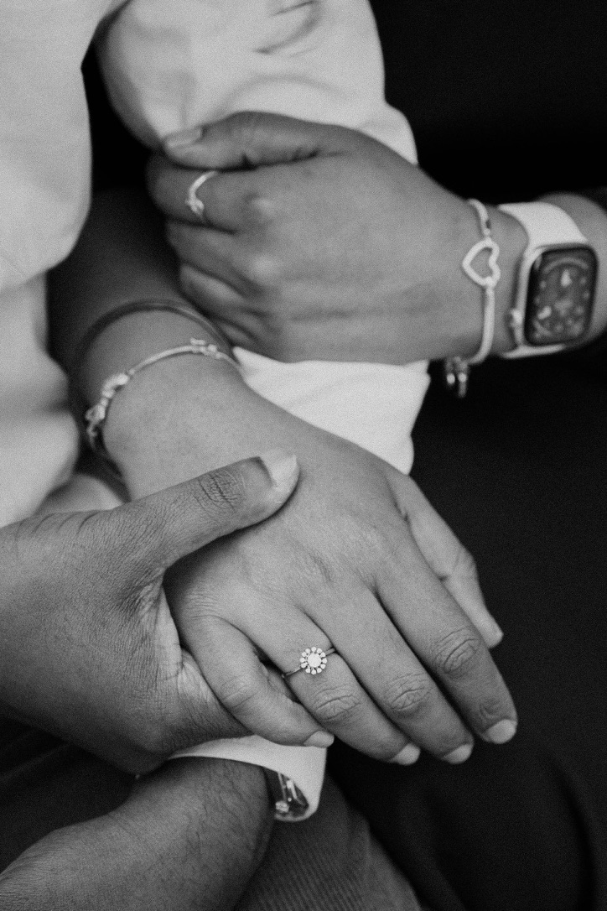
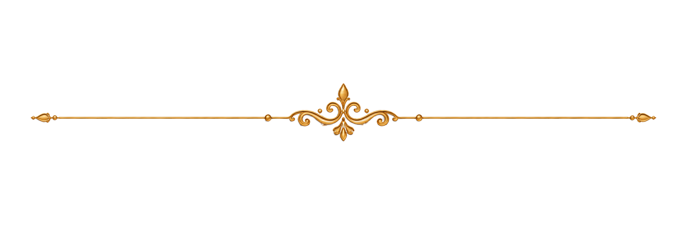
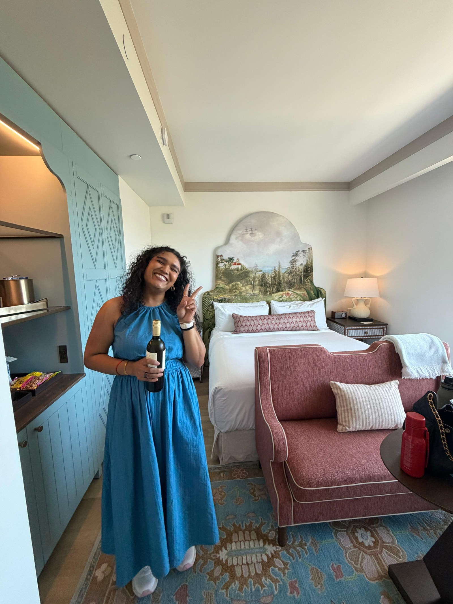
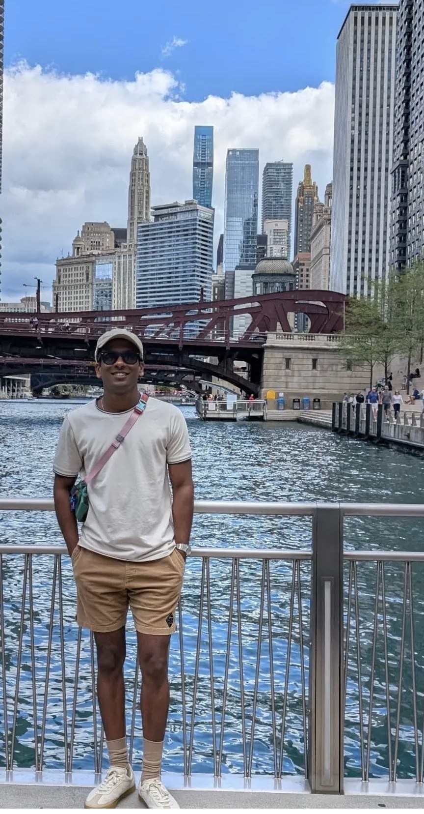

Our Story
Two worlds,
one beautifully
chaotic beginning

Every love story has a moment when the universe quietly smiles. Ours came wrapped in laughter, tiny coincidences, family blessings, and that one sweet realization: chaos and calm are not opposites; they are a love story waiting to happen.
This is the story of Lalana, with ocean wave energy, and Kartik, with calm water patience. One came with sparkle, drama, and spontaneous plans. The other came with quiet smiles, football updates, and a suspicious amount of patience.



Meet the Bride
Lalana
Born in Hyderabad, Lalana entered the world like a festival procession: bright, loud in the best way, full of color, and impossible to ignore.
Mischievous, naughty, and a certified troublemaker to her mom, she somehow also remains dad's forever princess. She is a globetrotter, a fun-loving storyteller, a camera-ready queen, and the kind of person who says, "just one picture" before creating a full photoshoot.
Once she sets her heart on something, she sees it through — whole weekends can disappear into a project, meals and sleep politely waiting their turn. Her hobbies arrive in waves too: one weekend crocheting, the next deep in a curiosity rabbit hole, or lost in classic Telugu films and K-dramas.
Her emotional intelligence is a gift — she tells the truth with kindness, and she feels everything fully. He jokingly calls her Rambutan: soft-hearted and sweetly sharp. And she notices the small things he does for her — which, to him, is one of the loveliest things of all.
Meet the Groom
Kartik
Born in Nagpur, Kartik is the calm in the room, the quiet smile in the crowd, and the guy who makes peace look effortless. The day Lalana met Kartik, he looked like an ordinary guy in his signature cap with the most innocent smile.
What she admired most was his humility and kindness. Even when life gets hectic and he's juggling ten things at once, he never forgets to check if she's okay.
A huge football fan, Kartik would happily pause the match to spend time with Lalana. He listens to every story, every random thought, and every bit of gossip, always making her feel heard.
Whether they are laughing over something silly or disagreeing about something small, he always makes her feel heard, respected, and loved.His love is found not in grand gestures, but in the countless little things he does every day, and that's what makes him so special.


And Then
The wave met the water
They didn't complete each other by becoming the same. They completed each other by staying two. Her rush found a place to land; his quiet found a reason to open up. And in that gentle collision of fire and ease, the wave met the water — and choosing forever suddenly felt like the simplest thing in the world.
And now, with all their beautiful madness,
they are ready for forever.